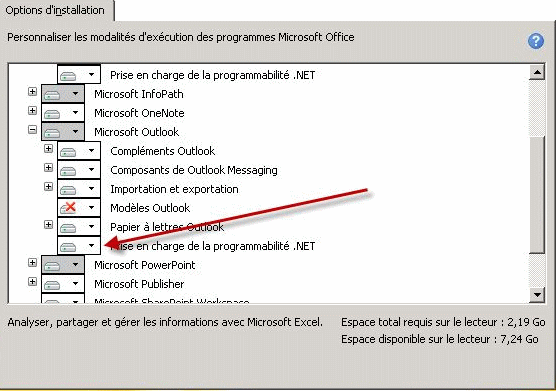

L’installation et le bon fonctionnement du connecteur nécessitent le Framework .NET 4.0, VSTO 4.0 et Windows Installer 3.1 de Microsoft.
Si ces produits ne sont pas déjà installés, le programme d’installation du connecteur propose de les télécharger à partir du site Web de Microsoft prévu à cet effet : ceci nécessite bien entendu d'avoir accès à Internet au moment d’installer le connecteur.
Remarque : Pour un poste n’ayant pas accès à Internet, téléchargez ces éléments depuis le site Web de Microsoft, copiez-les sur cd-rom et installez-les sur le poste client avant d’installer le connecteur pour Outlook.
Il faut télécharger les produits suivants :
Microsoft .NET Framework 4 (programme d'installation autonome) (publié depuis le 12/04/2010, 48 Mégas) :
http://www.microsoft.com/downloads/details.aspx?displaylang=fr&FamilyID=0a391abd-25c1-4fc0-919f-b21f31ab88b7
Microsoft Visual Studio 2010 Tools pour Office Runtime (VSTOR 2010) Redistributable (publié depuis le 5/6/210, 6 Megas) :
http://www.microsoft.com/downloads/details.aspx?familyid=f4d7a5a1-8ca8-489d-97eb-663a54d609a0&displaylang=en
Téléchargez vstor40_x86.exe si vous avez une version 32 bits de Windows ou vstor40_x64 pour une version 64 bits de Windows.
Windows Installer 3.1 (publié depuis le 02/09/2005, 2.5 Mégas) :
http://www.microsoft.com/downloads/details.aspx?displaylang=fr&FamilyID=889482fc-5f56-4a38-b838-de776fd4138c
De plus, l'option "Prise en charge de la programmabilité .Net" doit être activée dans Office :
